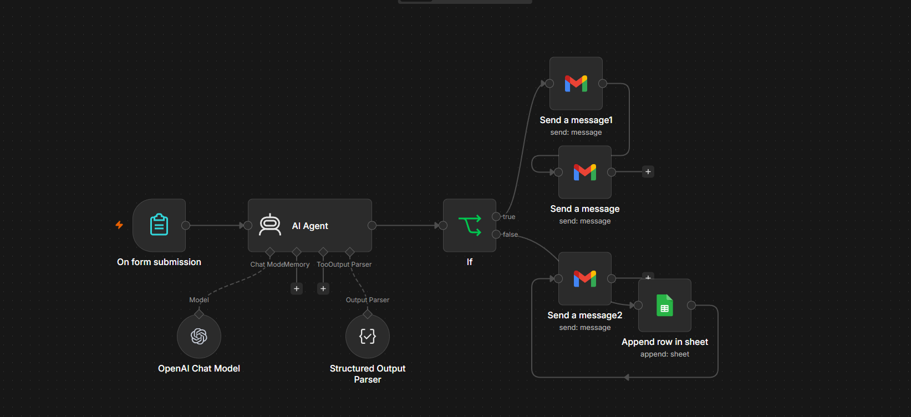
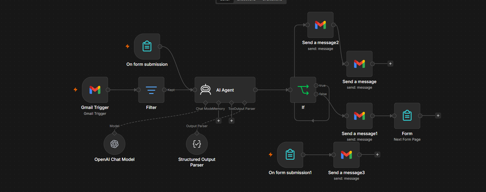
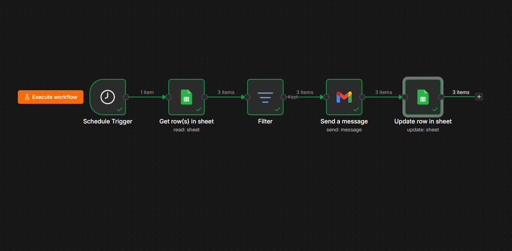

🏆 Top 5 Capstone Project
Tower of Knowledge
A 2D platformer built in Godot Engine that teaches ICT fundamentals through hands-on, level-based challenges. Built end-to-end solo: mechanics, level design, UI, and content.
Hi, I'm
I build things across web, games, and automation — always picking up new tools and shipping real projects along the way.
About Me
I'm a BSIT graduate of STI College General Santos City with a habit of picking up new tools and turning them into finished projects. My path started in game development, moved through document and data work, and is now heading toward AI and data. Here's how that happened.


My Journey
Studied Information Technology, building the foundation for everything I've done since, from game logic to data handling.
Designed and built a 2D educational game in Godot Engine that teaches ICT fundamentals through level-based challenges. I handled the full build myself: mechanics, level design, UI, and content.
Supported document management, Excel-based billing, data entry, data comparison, and technical support in a legal office setting where accuracy actually mattered.
Completed hands-on training at Holy Trinity College, building practical hardware and systems troubleshooting skills.
Took on an organizational leadership role, coordinating with classmates and officers outside of coursework.
Featured Work
🏆 Top 5 Capstone Project
A 2D platformer built in Godot Engine that teaches ICT fundamentals through hands-on, level-based challenges. Built end-to-end solo: mechanics, level design, UI, and content.

⚙️ AI Automation
An n8n workflow that captures incoming leads, qualifies them automatically, and books them directly into a calendar via Cal.com, removing manual back-and-forth from the intake process.

⚙️ AI Automation
Monitors incoming email and contact form submissions, uses AI to classify inquiries as Simple or Complex, auto-replies to simple ones, and escalates complex cases to the business owner with a structured intake form. Built for a home cleaning service client.

⚙️ AI Automation
An automated follow-up messaging sequence that keeps leads and clients engaged after first contact, triggered and tracked without manual intervention.
Technologies & Integrations
What I Know
Get In Touch
Have a project in mind, an opportunity to share, or just want to say hi? I'd love to hear from you.